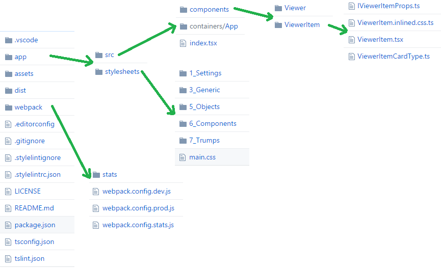
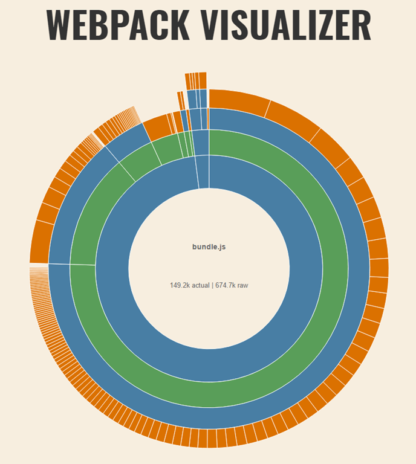
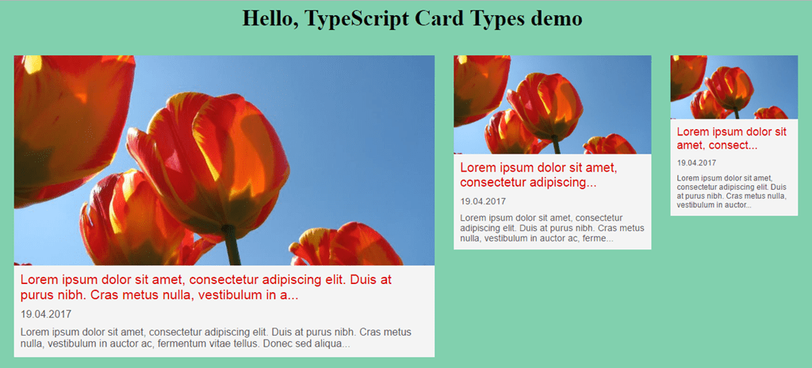

Introduction
Few months ago, I was starting to use WebPack 2 and TypeScript on my React projects. To be fair with ES6 and Babel, I really enjoyed build applications with them and they are in my hearth and that is why I did other post as well, about how to build a new SPA with ES6, SCSS, React, Webpack and HMR.
But, then I met TypeScript and to be honest at the beginning was so annoying to deal with typings… but once you get used to it, that really rocks!
Then I decided to create a boilerplate, starter template, (o whatever name you like more) to help me and other people in the community create the baseline project for our React applications written in TypeScript, using webpack 2 as a bundler system, using postcss combined with CSS Modules as a Style technique and having Hot Module Replacement as a powerful feature which allows us to see the changes reflected on the browsers immediately.
You can see, download and use freely the boilerplate on this link: https://github.com/jquintozamora/react-typescript-webpack2-cssModules-postCSS.
Folder Structure

Lot’s of configurations are happening on this template, but I will recap the main features:
Main Features
- React
- TypeScript (compiling directly to ES5)
- Hot Module Replacement (React Hot Loader 3)
- Webpack 2
- Webpack-dev-server
- Webpack configuration for HMR
- Webpack production configuration
- Split out css files using ExtractTextPlugin
- UglifyJsPlugin with options
- Use include in the loader instead of the exclude. More info
- More performance tips: here
- Webpack stats (bundle optimization helper)
- Generate stats.json file with profiler. Use [http://webpack.github.io/analyse/] to analyze it.
- webpack visualizer
- EditorConfig
Styling
General Styling (app/stylesheets):
- To include variables, generic CSS, normalize, reset, type selectors, …
- Methodology: ITCSS
- Tools: postCSS with import, nesting, custom properties and autoprefixer.
Components Styling (app/src/components/…):
- To be the module’s CSS
- Techniques: CSS Modules + postCSS (import, nesting, custom properties and autoprefixer).
Linting
TypeScript:
- TSLint: general rules + react rules
- VS Code TSLint extension
Styles
- Stylint: CSS rules
- Rules are on .stylelintrc.json
- All the rules
- Install VS Code extensions:
- Stylint: CSS rules
Stats
If you run npm run stats you will generate a HTML file with the bundle stats. That is really helpful to see which npm packages are you including and the size of them.

Useful demo
As part of the boilerplate, you will see a fancy demo app with two react components already created:
Viewer
- Stateless component (no state)
- Use CSS-Modules
ViewerItem
- Create 3 types of Item Card object (singleton, factory static)
- Use inline css using a function to assign CSS depending on the object
- Render Table layout compatible with emails
[
Star it!
If you like it, don’t forget to ★ on Github.